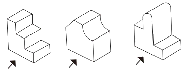
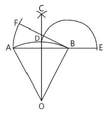
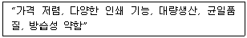
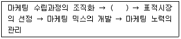

시각디자인산업기사 (2016-10-01 기출문제)
1과목: 색채학
1. 디지털 색채 시스템에서 RGB 형식에 대한 설명 중 틀린 것은?
- 가법혼색에 의한 색광혼합으로 원색을 합하면 흰색이 된다.
- RGB체계는 컴퓨터시스템에 의한 색채혼합방식이므로 전자장비들간의 통용이 가능하다.
- RGB 수치는 0부터 1 사이 범위로 나타낸다.
- RGB 공간은 빛의 원리로 컬러를 구현하는 방식이다.
(정답률: 52%)

2. 먼셀(Munsell)의 표색계를 색입체로 구성하였을 때 중심 세로축에 표현되는 것은?
- 채도
- 색상
- 명도
- 순도
(정답률: 85%)
3. 물체가 빛의 모든 파장을 흡수하면 무슨 색으로 보이는가?
- 흰색
- 검정
- 회색
- 빨강
(정답률: 65%)
4. 다음 중 '관용색-대응하는 계통색 이름-색의 3속성에 의한 표시'의 연결이 틀린 것은? (단, KS 기준)
- 벚꽃색-흰 분홍-25R 9/2
- 빨강-빨강-7.5R 4/14
- 벽돌색-탁한 적갈색-10R 3/6
- 상아색-노랑 하양-5Y 9/2
(정답률: 53%)
5. 스펙트럼의 분광분포 중 단파장 쪽에 많은 방사에너지가 포함되어 있을 때 보여 지는 색은?
- 청색계열
- 황색계열
- 녹색계열
- 적색계열
(정답률: 71%)
6. 기업 색채에서 가장 중시되는 것은?
- 기업정신, 대외홍보 등 기업의식을 표현해야 한다.
- 이미지 전달만 하면 된다.
- 독창성이 높으면 성공적이다.
- 색의 수가 많아야 한다.
(정답률: 95%)
7. 동시대비에 의한 색채조화론을 발표하였으며, 색채조화를 유사조화와 대비조화로 나누어 제시한 사람은?
- 비렌(Faber Birren)
- 먼셀(Munsell)
- 저드(Judd, D. B.)
- 쉐브럴(Chevereul, M. E.)
(정답률: 68%)
8. CIE(국제조명위원회)에서 먼셀기호를 검사하고 측색할 경우의 표준조건을 올바르게 설명한 것은?
- 표준광원 C에서 관찰각도 2°
- 표준광원 C에서 관찰각도 20°
- 표준광원 D65에서 관찰각도 2°
- 표준광원 D65에서 관찰각도 10°
(정답률: 67%)
9. 다음 중 먼셀색상환에서 가장 인접색의 관계에 있는 것은?
- 노랑과 연두
- 주황과 파랑
- 노랑과 보라
- 노랑과 초록
(정답률: 84%)
10. 색채관리의 진행순서 중 옳은 것은?
- 색의 설정 → 발색 및 착색 → 검사 → 판매
- 색의 설정 → 검사 → 발색 및 착색 → 판매
- 발색 및 착색 → 검사 → 색의 설정 → 판매
- 발색 및 착색 → 검사 → 판매 → 색의 설정
(정답률: 68%)
11. 다음 중 가시광선의 장파장의 색은?
- 파랑
- 연두
- 노랑
- 보라
(정답률: 77%)
12. 다음 중 색의 속성이 다른 것은?
- White
- Light gray
- Red purple
- Black
(정답률: 80%)
13. 어떤 색을 보고 잇따라 다른 색을 볼 때 생겨나는 대비현상은?
- 계시대비
- 동시대비
- 면적대비
- 연변대비
(정답률: 79%)
14. 색채의 감정과 관련된 대표적인 색의 속성을 연결한 것으로 거리가 먼 것은?
- 경연감 - 채도
- 중량감 - 명도
- 온도감 - 채도
- 거리감 - 명도
(정답률: 64%)
15. 다음 중 채도에 관한 것은?
- 색채의 밝기
- 색채의 맑고 탁한 순수성 정도
- 색채의 어두운 단계
- 색채의 광택
(정답률: 87%)
16. 적색에 검정색을 혼합했을 때 채도의 변화는?
- 높아진다.
- 낮아진다.
- 혼합하기 전과 같다.
- 시간이 지날수록 높아진다.
(정답률: 82%)
17. 다음 색채 조화론에 관한 설명 중 틀린 것은?
- 문, 스펜서 조화론에서의 미도(美度)는 배색이 복잡할수록 커진다.
- 문, 스펜서 조화론에서는 먼셀 표색계를 사용한다.
- 색채 조화론에는 정량적인 것과 정성적인 것이 있다.
- 오스트발트 조화론은 정량적인 것이다.
(정답률: 43%)
18. 오스트발트의 색상환을 구성하는 4가지 기본색을 무엇을 근거로 한 것인가?
- 헤링(Hering)의 반대색설
- 뉴턴(Newton)의 광학이론
- 영ㆍ헬름홀츠(Young-Helmholtz)의 색각이론
- 맥스웰(Maxwell)의 회전색 원판 혼합이론
(정답률: 77%)
19. 다음 중 유채색을 바르게 설명한 것은?
- 물체에 닿은 빛이 거의 모두 반사되어 보이는 색
- 채도가 0인 상태의 색
- 물체에 닿은 빛이 거의 모두 흡수되어 보이는 색
- 물체에 닿은 빛 중 일부 파장이 반사되어 보이는 색
(정답률: 79%)
20. 같은 물체의 색이라도 광원에 따라 색이 달라져 보이는 현상은?
- 작열현상
- 조건등색
- 연색성
- 표준광
(정답률: 46%)
2과목: 인쇄 및 사진기법
21. 인쇄의 4방식 중 윤곽얼룩(marginal zone) 현상이 생기는 인쇄방식은?
- 볼록판
- 오목판
- 평판
- 공판
(정답률: 72%)
22. 광화학적 방법으로 재판하는 방식이 아닌 것은?
- 연판
- 선화판
- 망점판
- 콜로타이프
(정답률: 55%)
23. 유리, 수면, 가구 등을 촬영할 때 반사되는 빛을 억제하기 위해서 사용하는 필터는?
- Polarizing Light filter
- Neutral Density filter
- Haze filter
- Contrast filter
(정답률: 68%)
24. 제책의 목적으로 가장 거리가 먼 것은?
- 페이지 순서를 올바르게 맞추기 위하여
- 잉크의 퇴색방지 및 인쇄물에 광택을 부여하기 위하여
- 읽는 사람에게 관리를 도모하기 위하여
- 기록이나 지식의 원천으로 오래 보존하기 위하여
(정답률: 49%)
25. 흑백인화 시 사진의 한 부분의 톤(tone)을 악화시켜주는 인화 방법은?
- 버닝(burning)
- 다징(dodging)
- 트리밍(trimming)
- 클로핑(cropping)
(정답률: 57%)
26. 다음 중 인쇄용 용지에 투과한 빛의 양에 의해 결정되는 것은?
- 인장강도
- 불투명도
- 지합
- 광택
(정답률: 63%)
27. 문자의 크기 중 1급의 크기를 나타내는 것은?
- 문자 한 변의 길이가 1/2mm인 정사각형 크기
- 문자 한 변의 길이가 1/3mm인 정사각형 크기
- 문자 한 변의 길이가 1/4mm인 정사각형 크기
- 문자 한 변의 길이가 1/8mm인 정사각형 크기
(정답률: 74%)
28. 다음 중 단추를 누르면 셔터가 열리고, 손을 떼면 닫히도록 설계된 단시간 노출용의 셔터는?
- T 셔터
- B 셔터
- I 셔터
- 자동 셔터
(정답률: 64%)
29. 컬러사진에서 감광재료에 사용되는 색소를 형성할 수 있는 물질은?
- 할로겐화은(AgX)
- 젤라틴(gelatine)
- 커플러(coupler)
- 현상제(developer)
(정답률: 50%)
30. 일반적으로 PS판을 사용하여 오프셋 인쇄를 하였다면 무슨 인쇄방식에 속하는가?
- 볼록판
- 오목판
- 공판
- 평판
(정답률: 70%)
31. 다음 중 화학펄프가 아닌 것은?
- 소다 펄프
- 아황산 펄프
- 크라프트 펄프
- 리파이너 쇄목 펄프
(정답률: 70%)
32. 촬영 후 네거티브형 컬러 필름을 발색 현상액에 넣어 처리하면 어떻게 변하는가?
- 은화상만 형성된다.
- 색화상만 형성된다.
- 화상이 형성되지 않는다.
- 은화상과 색화상이 동시에 형성된다.
(정답률: 43%)
33. 패닝(panning)에 대한 설명으로 틀린 것은?
- 동체의 움직임에 맞춰 카메라를 움직이면서 촬영하는 방법이다.
- 패닝을 할 수 있는 피사체는 카메라에 대해 직각으로 이동하는 것이 좋다.
- 운동방향이 각기 다른 피사체의 움직임을 나타내는 데 적절하다.
- 알맞은 흐름과 셔터 속도의 선택이 중요하다.
(정답률: 62%)
34. 다음 중 접사 도구가 아닌 것은?
- 벨로즈
- 중간링
- 클로즈업 렌즈
- 브라케팅
(정답률: 56%)
35. 카메라를 초점 체제에 따라 분류한 것이 아닌 것은?
- 포컬플레인 셔터 카메라
- 뷰 카메라
- 레인지 파인더 카메라
- 반사식 카메라
(정답률: 59%)
36. 다음 조명 방법 중 조명의 명암 비율이 1：1이 되는 것은?
- 순광
- 사광
- 측광
- 반역광
(정답률: 38%)
37. 컬러사진에서 청색 감광층의 할레이션을 방지하고 녹색 감광층과 적색 감광층에 청색광이 감광하는 것을 방지하는 층은?
- 중간층
- 황색필터층
- 보호층
- 적감유제층
(정답률: 77%)
38. 현상처리 공정 중 미노출 부분의 할로겐화은을 용해하여 유출시키는 공정은?
- 현상
- 수세
- 표백
- 정착
(정답률: 27%)
39. 가시광선의 파장범위로 옳은 것은?
- 100~350nm
- 380~780nm
- 800~1420nm
- 1450~1740nm
(정답률: 91%)
40. 다음 중 인쇄기 급유의 필요성과 가장 거리가 먼 것은?
- 감마효과
- 냉각효과
- 속력증가효과
- 응력분산효과
(정답률: 37%)
3과목: 시각디자인론
41. 알베르트(L. B. Alberte)의 회화론에서 설명하는 디자인 법칙은?
- 원근법
- 적도법
- 반복법
- 평행법
(정답률: 61%)
42. 다음 아이디어를 시각화하는 과정 중 제일 먼저 선행되는 작업은?
- Mechanical Art
- Rough Sketch
- Comprehensive
- Thumbnail
(정답률: 42%)
43. 다음 광고 수용과정 중 실제적인 구매가 이루어지는 과정은?
- 접촉과정
- 행동과정
- 인지과정
- 태도과정
(정답률: 85%)
44. 한국산업표준(KS)의 제도통칙에 의거하여 우리나라에서 사용하는 투상법은?
- 제1각법
- 제2각법
- 제3각법
- 제4각법
(정답률: 61%)
45. 의뢰자가 디자이너에게 일정금액으로 디자인계약을 하는 경우를 무엇이라 하는가?
- 시간적 요금제도
- 사용료 제도
- 일정요금 제도
- 계약요금 제도
(정답률: 52%)
46. 일반적인 도형과 바탕의 성질을 분류한 설명 중 틀린 것은?
- 도형은 선이나 표면이 복잡해지면 평면으로 보인다.
- 도형은 표면이 있는 것처럼 보이나 바탕은 그렇지 않다.
- 도형은 인상성과 주목성이 강하므로 기억되기 쉬운 데 비해 바탕은 그렇지 못하다.
- 도형은 앞으로 두드러지는 까닭에 가까워 보이고 바탕은 배경이 되어 멀어져 보인다.
(정답률: 71%)
47. 아르누보(Art Nouveau)의 대표적 이론가는?
- Henry van de velde
- John Ruskin
- William Morris
- Walter Gropius
(정답률: 56%)
48. 레드 하우스(Red house)와 관계있는 사람은?
- 윌리엄 모리스
- 빅토리아 여왕
- 알버트 공
- 에펠(Eiffel)
(정답률: 74%)
49. 지형의 높고 낮음을 지도 위에 표시하는 것과 같이, 기준면을 정하고 기준면에 평행한 평면을 같은 간격으로 잘라 평화면상에 투상하는 수직투상은?
- 축측투상법
- 사투상법
- 표고투상법
- 정투상법
(정답률: 66%)
50. 기업이 사회와의 관계를 유리한 방향으로 유도하기 위해 경영전략의 일환으로 시행하는 기업이미지통합정책은?
- B.I.(Brand Identity)
- S.I.(Shop Identity)
- C.I.(Corporate Identity)
- P.I.(Personal Identity)
(정답률: 76%)
51. 산업혁명에 의한 문명의 대중화에 따른 역효과를 개탄하며 나타난 미술공예운동(Arts and Crafts Movement)은 수공예로의 복귀주장과 예술과 노동의 결합을 강조하였다. 이 운동과 관계있는 사람은?
- 윌리엄 모리스
- 구텐베르그
- 헨리 반 데 벨데
- 그로피우스
(정답률: 61%)
52. 다음 중 디자인의 기능과 역할이 아닌 것은?
- 디자인은 인간의 예술적, 실용적 욕구를 만족시킨다.
- 디자인은 그 자체로 재화의 기능을 수행할 수 있다.
- 디자인은 다각적인 효율성을 지닌다.
- 디자인은 윤리적 책임을 갖는다.
(정답률: 73%)
53. 1851년 제1회 런던 만국 박람회의 결과가 아닌 것은?
- 과장된 장식 표현 현상이 지배적이었다.
- 새로운 기계시대를 알리는 인식의 변화를 주었다.
- 조립공법에 의한 박람회장은 건축양식의 분기점이었다.
- 내용면에서 찬사를 받아 기계 공업제품의 우수성을 알렸다.
(정답률: 32%)
54. 아름다운 인체, 눈의 결정, 조개껍질 등에서 느낄 수 있는 형태는?
- 이념적 형태
- 자연 형태
- 인위적 형태
- 순수 형태
(정답률: 83%)
55. 다음 중 행복, 슬픔, 자연스러움, 화려함, 담대함 또는 그 밖의 감정이나 개념을 표현하는 그래픽적 수단과 힘을 가지고 있는 것은?
- 점
- 선
- 면
- 부피
(정답률: 82%)
56. 1930년대 미국에서 노만 벨 게데스(N. B. Geddes)에 의해 유행된 스타일은?
- 타원형
- 장식형
- 직선형
- 유선형
(정답률: 67%)
57. 제품수명주기에서 지속적으로 이익이 향상되는 시기는?
- 도입기
- 성장기
- 성숙기
- 쇠퇴기 직전
(정답률: 75%)
58. 그림의 입체를 투상도로 작성할 때 동일한 면은?

- 정면도
- 평면도
- 좌측면도
- 우측면도
(정답률: 61%)
59. 그림의 작도는 무엇을 구하기 위한 것인가?

- 삼각형에 외접하는 원호
- 원호와 같은 길이의 직선
- 원호 길이의 삼각형
- 원을 이용한 원호 그리기
(정답률: 53%)
60. 1920년대와 1930년대에 유행한 근대미술양식으로 직선적이고 기하학적이며 간결한 것이 특징인 것은?
- 모더니즘
- 트리엔날레
- 아르누보
- 아르데코
(정답률: 42%)
4과목: 시각디자인실무 이론
61. 다음 내용은 어느 포장 방법의 특징인가?

- 유리
- 목재
- 플라스틱
- 종이
(정답률: 85%)
62. 아이덴티티 디자인의 기본시스템에 속하는 것이 아닌 것은?
- 심벌마크
- 컬러
- 사인
- 로고타입
(정답률: 72%)
63. 마케팅에 관한 설명 중 틀린 것은?
- 소비자만족을 목적으로 한다.
- 기업목표를 달성하기 위한 경영활동이다.
- 거래는 판매시점에서 종료된다.
- 상품 또는 서비스를 소비자에게 유통시키는 데 관련된 모든 체계적 활동이다.
(정답률: 80%)
64. 자유로운 토론 과정을 거쳐 제안하는 방법으로, 상대방의 의견에 대한 거부나 비판을 금지하는 아이디어 발상법은?
- 고든법
- 체크리스트법
- 속성열거법
- 브레인스토밍법
(정답률: 85%)
65. 신문광고의 구성요소 중 내용적 요소가 아닌 것은?
- 헤드라인(Head Line)
- 보더라인(Border Line)
- 보디카피(Body Copy)
- 캡션(Caption)
(정답률: 45%)
66. 다음 중 옥외광고물이 아닌 것은?
- 애드벌룬
- 네온사인
- 스카이라이팅
- 안내광고
(정답률: 58%)
67. 다음 중 포장의 기능이 아닌 것은?
- 내용물의 보호
- 취급의 편리
- 상품의 기획
- 상품가치의 부가
(정답률: 73%)
68. 다음 마케팅 관리의 과정 중 ( )에 들어갈 적합한 내용은?

- 시장조사 분석
- 마케팅 지출의사 결정
- 연간계획 수립
- 효과적 배급경로 선택
(정답률: 80%)
69. 컴퓨터 그래픽스에서 제한된 수의 색상들을 사용하여 다양한 색상들을 시각적으로 섞어서 인접 컬러로 추출하는 방법은?
- 디더링(Dithering)
- 앤티앨리어싱(Anti-aliasing)
- 크로핑(Cropping)
- 팔레트 플래싱(Palette Flashing)
(정답률: 45%)
70. 다음 중 문화행사 포스터와 관련이 없는 내용은?
- 국가의 경제성, 문화수준 그리고 예술성을 잘 나타내기도 한다.
- 연극, 영화, 음악회, 전람회, 박람회 등의 고지적 기능을 수행한다.
- 일반적으로 공공 캠페인 포스터 또는 소셜포스터를 의미한다.
- 제목 외에 일시, 장소 등 최소한의 자료를 기입할 필요가 있으며 한 눈에 내용을 이해할 수 있도록 제작한다.
(정답률: 68%)
71. 편집디자인에서 시각적 확대 효과를 위해 지면이 재단되는 끝까지 인쇄되도록 레이아웃 하는 방법은?
- 몽타쥬
- 실루엣
- 트리밍
- 블리드
(정답률: 65%)
72. 타이포그래피에서 커닝(Kerning)이란?
- 특정한 글자 사이의 간격을 조정하는 것
- 특정한 문장 간의 간격과 길이를 조정하는 것
- 전체 문장의 단어 사이 띄어쓰기를 조정하는 것
- 전체 칼럼 사이의 간격을 조정하는 것
(정답률: 58%)
73. 금방이라도 비가 내릴 것 같은 시각적 이미지를 주기 위해 어떤 디자이너가 먹구름을 그렸다면 이 구름은 기호의 유형상 어떤 것에 해당하는가?
- 신호
- 지표
- 상징
- 도상
(정답률: 38%)
74. 사진이나 필름 등의 이미지를 스캐너로 입력을 받는 경우, 규칙적으로 배열된 선, 점, 동심원 등의 모양이 중첩되어 나타나는 간섭으로 만들어진 줄무늬나 얼룩반점을 무엇이라 하는가?
- 프레이밍(Framing)
- 크로핑(Cropping)
- 블러(Blur)
- 모아레(Moire)
(정답률: 77%)
75. 기업이 기대하는 마케팅목표를 달성하기 위해 제품, 가격, 판매촉진, 유통 등의 기능을 전략적으로 실시하는 마케팅 활동은?
- 마케팅 믹스
- 고객분석
- 미디어 믹스
- 경쟁좌표분석
(정답률: 89%)
76. 컴퓨터상에서 폰트의 아우트라인(outline)을 만들거나 변형이 용이한 디지털 폰트 포맷으로 비교적 사용이 간편한 것은?
- 3D 파일 포맷
- 오픈 타입(open type)
- CID-Keyed 폰트
- 트루 타입 폰트(true type font)
(정답률: 59%)
77. 인터넷광고의 장점으로 틀린 것은?
- 타깃(Target)광고가 어렵다.
- 정보를 대량으로 공급할 수 있다.
- 피드백(Feedback)이 용이하다.
- 정보의 상호전달이 가능하다.
(정답률: 69%)
78. AIDMA 법칙의 요소를 옳게 나열한 것은?
- Action → interest → Desire → Membership → Attention
- Attention → interest → Desire → Memory → All
- All → interest → Desire → Memory → Action
- Attention → interest → Desire → Memory → Action
(정답률: 78%)
79. 일반적으로 제조업에서는 제품계획에 포함되며 한 기업이 생산, 공급하는 모든 제품의 배합을 말하는 것은?
- 매체혼합믹스
- 제품믹스
- 디자인폴리시
- 콜로타이프
(정답률: 59%)
80. 기업의 제품과 마케팅믹스의 소비자의 마음속에 긍정적으로 자리 잡게 기획하는 광고 용어는?
- 타깃 설정
- 포지셔닝 전략
- 디자인 모티브 설정
- 매체 전략
(정답률: 78%)
RGB 체계는 컴퓨터 시스템에 의한 색채 혼합 방식이므로 전자 장비들 간의 통용이 가능하다는 것은 맞는 설명이다.
따라서 정답은 없다.